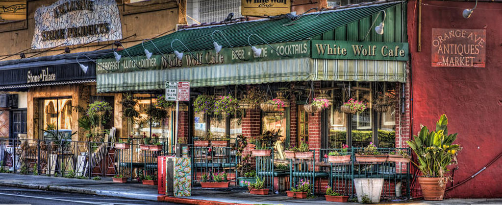

Gourmet Bistro.
Our Story.
White Wolf Cafe & Bar is an award-winning, gourmet bistro serving breakfast, brunch, lunch, and dinner. The restaurant started as a dream in August of 1991 when we opened our doors as an antique store.The White Wolf Café is named for Casper the white german sheppard that was a faithful companion in the antique store days.
 Over the years, we blossomed and transformed into an eclectic restaurant known for our unique decor, creative menu items, and warm staff. None of this would have been possible without the loyal patronage of community members and the hardworking nature of our wonderful staff. Owners Michael and Anne Marie Hennessey are often on sight with a warm welcome for new guests and old friends alike.
Over the years, we blossomed and transformed into an eclectic restaurant known for our unique decor, creative menu items, and warm staff. None of this would have been possible without the loyal patronage of community members and the hardworking nature of our wonderful staff. Owners Michael and Anne Marie Hennessey are often on sight with a warm welcome for new guests and old friends alike.
We are proud of our location in the Ivanhoe Village, a hip and bohemian district known for its colorful artist community.It is a quaint, antique area only minutes away from downtown Orlando, Winter Park, and many shops and services, including bike shops and local wine bars. We are committed to this community, which has adopted us as one of its own. Over 25 years, we have earned a cherished place in Orlando's heart. We love to meet visitors to the area and welcome back our local regulars. Come out and try our delicious food today!